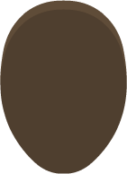
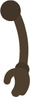
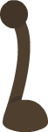
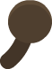

Quatro arquivos originais

body_darkC.png
arm_darkB.png
leg_darkB.png
detail_dark_eye.pngEscala e disposição são apenas testes de composição; as imagens importadas permanecem intactas.
Montagem exploratória
Critério de aprovação: legibilidade em escala real, compatibilidade com a floresta de Mürin e potencial de animação de membros. Não foi aprovada para o Ettercap.
Rastreabilidade e próximos testes
- Autor: Kenney · pacote Monster Builder Pack (2022).
- Licença: CC0 1.0, verificada no aviso original; página do criador.
- Origem: espelho Tiddybub/2d-assets. Quatro PNGs preservados sem recolorir.
- Etapa pendente: produzir e testar 7 × 4 poses únicas antes de ativar esse estilo na exploração.